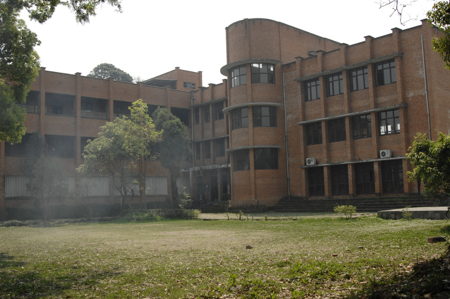

2026 – Present

MSc Disaster Risk Engineering and Management (DREM)
Tribhuvan University, IOE Pulchowk Campus
What I am studying here:
- Disaster Risk Engineering and Management (DREM) combining engineering design with data-driven infrastructure monitoring.
- Application of Satellite Remote Sensing and GIS in disaster risk mapping, ground deformation tracking, and climate hazard assessment.
- Flood, Earthquake, Landslide - Risk Engineering and Management